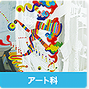
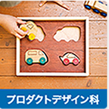
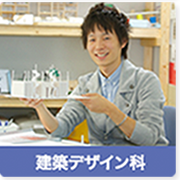
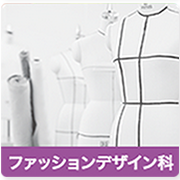
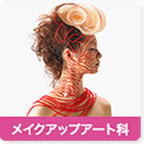
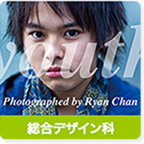
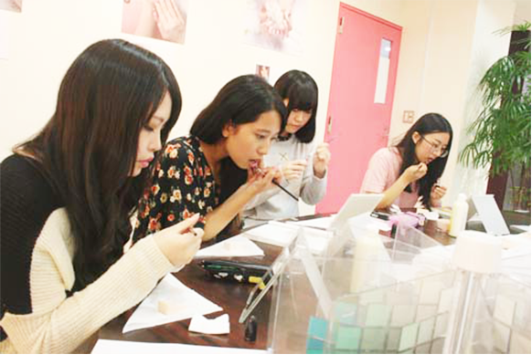
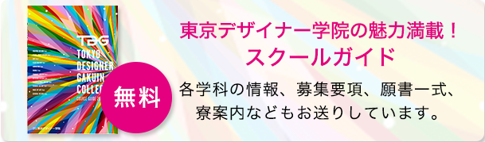

学校の特徴 東京デザイナー学院とは？
可能性広げる 12学科 51専攻紹介
募集要項 出願について
次の時代へ! 学校長メッセージ
最新の施設 12学科 51専攻紹介
情報満載 出願について
東京デザイナー学院
デザイン関係のあらゆるジャンルを網羅
全12学科 51専攻






NEWS & TOPCKS
2015.09.08
10月2日(金)・3日(土) さいかち展 開催します！
2015.09.01
9月・10月のオープンキャンパスへ行こう！
NEWS & TOPCKS

2015.09.08
ファッションデザイン科】第4回ＡＯプレスクール☆
遠方へお住まいの方へ
